1과목: 디지털 전자회로
1. SSB(Single Side Band)에 관한 설명 중 맞는 것은 ?
2. 그림과 같이 1[㏀]의 저항과 실리콘(Si)다이오드의 직렬회로에서 다이오드 양단의 전압은 얼마인가 ?
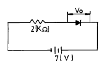
3. 다음 논리식은 무슨 법칙을 활용하여 전개한 것인가?
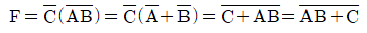
4. 동조형 증폭기에서 공진주파수 fo, 주파수 대역폭 B, 코일의 Q 와의 관계를 설명한 것중 맞는 것은 ?
5. 그림과 같은 회로에 입력 Vi가 인가되었을 때 출력은 어느 것이 가장 적당한가 ?
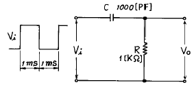
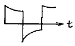
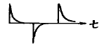
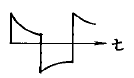
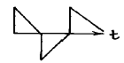
6. 그림과 같은 회로의 입력에 계단전압(step voltage)을 인가할 때 출력에는 어떤 파형의 전압이 나타나는가 ? (단, A는 이상적인 연산증폭기이다.)
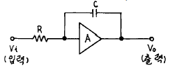
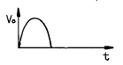
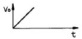
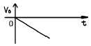
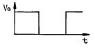
7. 배타 OR(Exclusive OR)회로의 논리식으로 잘못된 것은 ?
8. 그림의 궤환 증폭기에서 C를 제거하면 어떤 현상이 일어나는가 ?
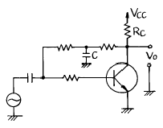
9. 에미터 접지 트랜지스터 스위칭 회로에서 베이스와 에미터를 단락시키면 출력상태는 ?
10. 다음 3변수 논리식을 간단히 하면 ?
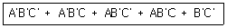
11. 바크하우젠의 발진조건에서 증폭기의 증폭도 A=100 이고, 귀환회로의 귀환비율을 β 라고 할 때 귀환비율 β 값은 ?
12. 입출력장치를 마이크로컴퓨터에 연결하는 데에 필요한 특수한 장치는 ?
13. TTL(Transistor-Transistor Logic)의 특징을 설명한 것으로 틀린 것은 ?
14. JK F/F(flip-flop)의 2개의 입력이 똑같이 1이고, 클럭펄스가 계속 들어오면 출력은 어떤상태가 되는가 ?
15. S-R Flip-Flop 을 J-K Flip-Flop으로 바꾸려고 할 때 필요한 게이트는?
16. 어느 반송파를 정현파 신호에 의하여 100[%] 진폭변조하였을 때 피변조파 출력전력 Pm과 반송파 전력 Pc와의 관계는 ?
17. 트랜지스터의 증폭기의 입력전력이 4[㎽]이고, 출력전력이 8[W]일 때 이 증폭기의 전력이득은 ?
18. 그림과 같은 연산 증폭기의 증폭도는? (단, Ri =∞, AV =∞)
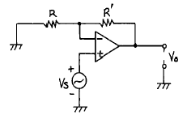
19. 다음 회로에서 Vi - Vo 특성곡선을 올바르게 나타낸 것은 ?
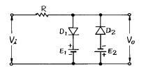
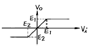
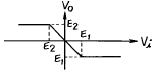
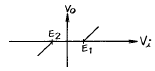
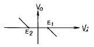
20. CR 발진기의 설명으로 옳은 것은?
2과목: 무선통신 기기
21. 연축전지의 취급상 주의할 점에서 틀리는 사항은 ?
22. 단일 리액턴스관(Reactance tube)방식으로서 최대 주파수편이 30[㎑]를 얻으려면 얼마로 체배하여야 하는가 ? (단,음성 주파수 범위는 30 ∼ 3000[㎐]이고, 이 리액턴스관의 직선범위는 0.33[㎭]이다.)
23. 주파수 변조 통신 방식에서 프리 엠파시스(pre-emphasis)를 쓰는 목적은 ?
24. 다음 중 위성의 다원접속 방법에 해당되지 않는 것은?
25. SSB수신기의 구성이 DSB수신기의 구성과 다른 점은 다음과 같다. 잘못된 것은 ?
26. 오실로스코프로 변조도를 측정한 결과 파형이 그림과 같다고 한다. 이때 변조도는 ?
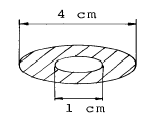
27. 필터가 없는 단상 브리지 정류회로에서 평균 직류 출력전압이 5[Ω]의 부하에 10[V] 이었다고 한다. 정류용 변압기 2차 측에 필요한 최대치 전압은 ?
28. 다음중 FM송신기와 관계가 없는 것은 ?
29. 컬렉터 변조식 변조도가 60[%],피변조기의 컬렉터 손실이 200[W],컬렉터 효율이 70[%]일때 반송파 전력은 ?
30. 다음 중 급전선 등 전송선로의 정합상태의 양부를 나타내는 것은?
31. FM 수신기 복조기에서 Foster - Seely 형과 Ratio - Detector 형에서 검파감도의 비는 ?
32. CDMA 셀룰러 및 PCS 이동통신에서 특정 기지국에 가입자가 증가되면 어떤 현상이 발생될 수 있는가?
33. 위성 중계기에서 잡음의 영향을 최소화하기 위해서 저잡음 증폭기에 사용되는 소자는?
34. 무선 송신기와 안테나의 결합회로중 π 형 결합 방식의 특징으로 옳지 않은 것은?
35. 단파 수신기에서 페이딩(Fading)에 의한 수신전계 강도 변화에 의한 수신기 감도를 안정시키기 위한 회로는?
36. 통신에서 기저대역 필터의 사용목적으로 옳은 것은 ?
37. 그림은 FM수신기의 리미터 특성을 측정하기 위한 구성도와 전압계로 입력과 출력단의 전압을 측정한 경우의 E1- E2 관계특성을 보이고 있다. 리미터의 적합한 특성은?
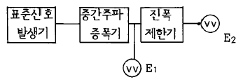
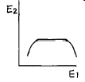
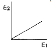
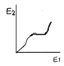
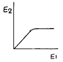
38. AM수신기에서 중간 주파수가 필요한 가장 큰 이유는?
39. 송ㆍ수신기용 발진기로서 적당하지 않은 조건은 ?
40. 수신기에서 증폭도와 내부잡음에 의하여 영향을 가장 많이 받는 것은 ?
3과목: 안테나 개론
41. 안테나의 빔(Beam)폭에 관한 설명으로 옳은 것은?
42. 정재파를 설명하는데 옳지 못한 것은?
43. 자유공간내에 있는 그림과 같은 12소자 비임 안테나의 이득은 얼마인가 ? (단, 반파장 다이폴의 복사저항은 73.13[Ω], 전복사저항은 452.33[Ω] 이다.)
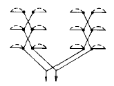
44. 주간에 전리현상을 활발하게 하여 전리층의 전자 밀도가 크게 되는 원인은 ?
45. 다음 도파관창 중에서 LC 병렬 회로로 볼 수 있는 것은 ?
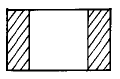
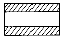
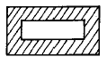
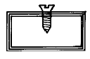
46. 복사저항이 36[Ω], 접지저항이 14[Ω]인 안테나에 1KW의 전력이 공급되고 있을때 복사전력은 ? (단, 여기서 다른 손실 무시한다.)
47. 100[m]의 수직접지 공중선이 750[㎑]의 주파수로 20[KW] 의 전력을 복사할때 20[㎞]떨어진 지점의 전계 강도는 ?
48. 태양에서 발생하는 자외선의 돌발적 증가로 인하여 발생되는 전파방해는 ?
49. 자유공간의 파동 임피던스를 나타내는 것중에서 틀린 것은? (단, ε 은 유전율, μ 는 투자율, E는 전계, H는 자계로서 자유공간의 값이라 한다.)
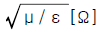
50. 단파안테나는 장파안테나에 비해 다음과 같은 특성이 있다. 틀린 것은 ?
51. 지표면으로부터 전리층을 향하여 수직으로 펄스파를 발사한 후 0.0004초에 반사파를 확인했다. 어느 층에서 반사 되었는가?
52. 송신안테나(반파장 안테나)로부터 수신점의 전계강도는 ?
53. 다음의 비동조급전에 대한 설명 중 옳은 것은?
54. 특성 임피이던스가 50[Ω]인 선로에 부하를 걸어줄 때 전압 정재파의 실효치의 최대치는 50[V] 최소치가 20[V]이다. 정재파비는 얼마인가?
55. 다음중에서 주로 단파대에서 사용되지 않는 안테나는 ?
56. 파라볼라안테나(parabolic Antenna)의 특징 설명중 잘못된 것은 ?
57. 단파대에서 제1종 감쇠의 설명으로 맞는 것은 ?
58. 반사기에 관한 설명으로 옳지 못한 것은 ?
59. 위성통신용 안테나로 가장 적당한 것은 ?
60. 대류권 산란파의 특징이 아닌것은 ?
4과목: 전자계산기 일반 및 무선설비기준
61. 전파형식의 표기에서 단측파대의 전반송파/ 아날로그정보로된 단일채널 / 전화(음성방송 포함)를 올바르게 나타낸 것은?
62. (01001101)2 의 1의 보수는?
63. 공중선계의 조건으로서 충족하지 못한 것은?
64. 다음 중 정보의 개념을 하위 개념에서 부터 상위 개념으로 나열한 것은?
65. 공중선전력의 허용편차로 틀린 것은?
66. 다음중 형식등록대상기기에 해당하지 않는 것은?
67. 88㎒ 내지 108㎒의 주파수의 전파를 이용하여 음성을 보내는 방송의 용어는?
68. 다음중 무선설비의 형식검정업무를 취급하는 기관은?
69. 산업용 전파응용설비에서 사용하는 고주파출력은 몇 W를 초과하는 것을 말하는가?
70. 다음중 인터럽트(interrupt)가 발생되지 않는 경우는 어느 것인가?
71. 순서도의 작성 시기는?
72. 전자파 적합등록을 하여야 할 전자파 장해기기 및 전자파로부터 영향을 받는 기기에 해당하지 않는 것은?
73. 다음 중 전자계산기 중앙처리장치의 구성요소가 아닌 것은?
74. 다음에서 접근 속도(access time)가 빠른 순서로 나열된 것은?
75. 오퍼레이팅 시스템의 성능 평가중 데이터 처리를 위하여 시스템이 필요하게 되었을 때 시스템을 어느 정도 빨리 사용할 수 있는가를 나타내는 것은?
76. 프로그램 카운터가 명령 번지 부분과 더해져서 유효 번지가 결정되는 주소지정 방식은?
77. 다음중 무선국의 개설허가심사 사항으로 틀린 것은?
78. A3E 전파형식을 사용하는 방송국 송신설비의 공중선전력은 무엇으로 표시하는가?
79. 자료의 외부적 표현방식인 EBCDIC 코드로 표현할 수 있는 최대 문자수는 ?
80. 다음중 도형이나 사진 등을 기억장치로 읽어들일 수 있는 장치는 ?